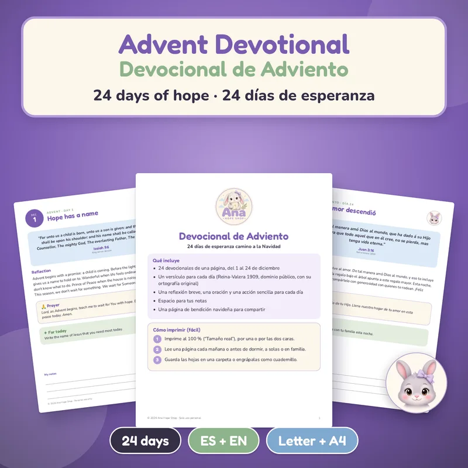
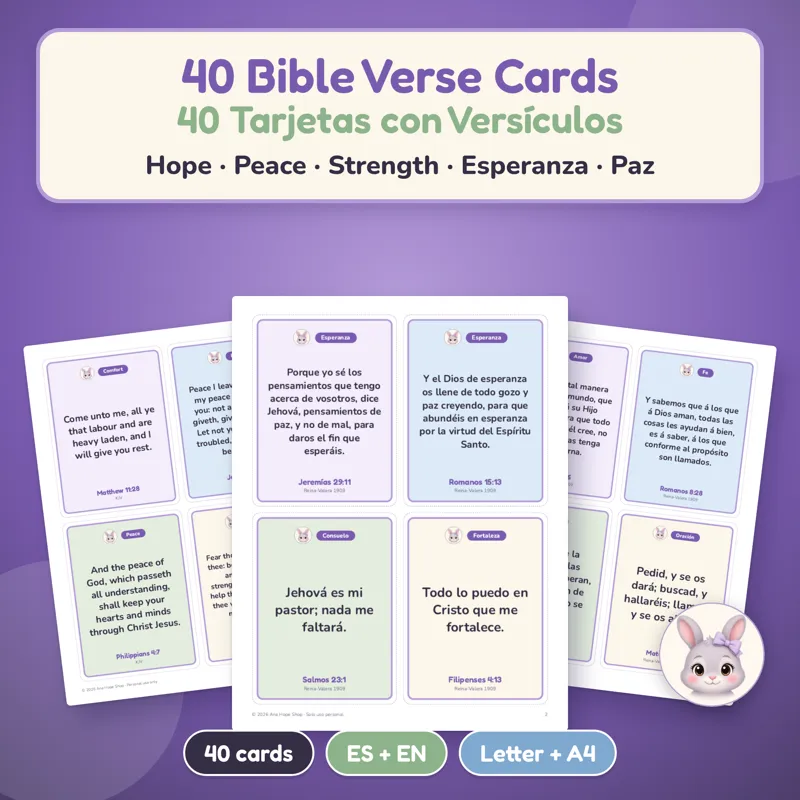
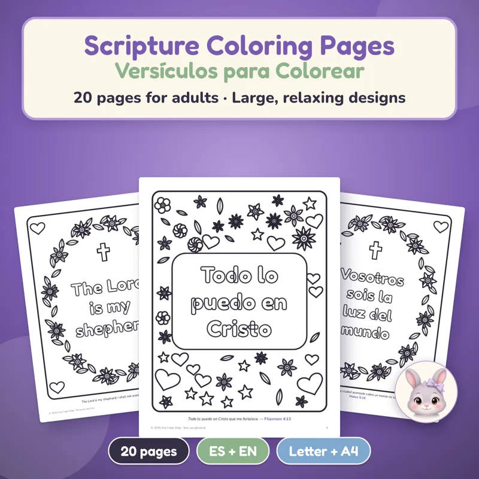

Home › Christian Christmas printables
Christian Christmas printables for Advent and the holidays
A 24-day Advent devotional for $4.99 and 40 large-print Bible verse cards for $3.99, plus verse coloring pages and a Rosary and novenas guide. Instant PDFs in English and Spanish, US Letter and A4.

Advent Devotional: 24 Days
A KJV verse, reflection, prayer and action for each day, Dec 1–24.
$4.99 USDBuy and download
Keep Christ at the center of a busy Christmas
Advent begins on Sunday, November 29, 2026, and December fills up fast. These printables give your family, your Bible study or your prayer group a few quiet minutes each day: a devotional page to read, a verse to carry, a page to color while you pray. Every one is ready to print at home tonight.
What each printable is for
- Advent devotional (24 days): one page for each day from December 1 to 24, with a King James Bible verse, a short reflection you can read in 2 minutes, a prayer, one simple action for the day and lines for notes. It walks from the promises of Isaiah and Micah to the shepherds and angels, and ends on Christmas Eve with John 3:16. 26 pages per file.
- 40 Bible verse cards: large, easy-to-read scripture cards, 4 per page, on 16 themes like hope, peace, comfort, joy and courage, with a page of card backs for two-sided printing. Tuck one into a Christmas card, a gift or a hospital visit.
- Bible verse coloring pages for adults: 20 pages of mandalas, flower wreaths, hearts, doves and sunrises, each with a verse in big outlined letters. Big, clear spaces make them comfortable for seniors and lovely for women's groups or Sunday school.
- Holy Rosary and novenas guide: a large-print, 16-page guide to praying the Rosary step by step, with the mysteries for each day and three novenas, including Our Lady of Guadalupe (December 12). A thoughtful gift for a grandmother or godmother.
How to print them
- Download the PDFs right after checkout. Each product comes as 4 files: English and Spanish, in US Letter and A4.
- Print at 100% ("Actual size"). Use cardstock for the verse cards and plain paper for the devotional and coloring pages.
- No printer? Any print shop or office store can print them for you.
English verses use the King James Version and Spanish verses use the Reina-Valera 1909, both public domain. Want the devotional on its own? See the printable Advent devotional page.
¿Prefieres en español? Todos vienen también en español, con versículos de la Reina-Valera 1909.
More faith printables for the season


Holy Rosary and Novenas Printable
A gentle, large-print guide to praying the Holy Rosary, ready to print at home today.
$4.99 USDBuy and download
Free Christmas Mini Kit
Charades, Would You Rather, Christmas Scattergories, card + 8 gift tags, coloring page and 2027 mini calendar. EN + ES.
FREEGet it free
All Holidays Mega Pack Printable Bundle
Every party from October to December, done!
$29 USDBuy and downloadQuestions
Are these printables Christian and Bible-based?
Yes. Every page uses Bible verses: the King James Version in English and the Reina-Valera 1909 in Spanish, both public domain.
When should I start the Advent devotional?
It has one page for each day from December 1 to December 24, ending on Christmas Eve with John 3:16.
Are they good for seniors?
Yes. The verse cards, coloring pages and Rosary guide are all in large, easy-to-read print with big, clear spaces.
What paper size are they?
Each product includes US Letter and A4 PDFs, in English and in Spanish.
Is there a free Christmas printable?
The Christmas Mini Kit is free. It has party games and cards rather than devotional pages, so it's a good way to see the print quality first.
Is anything shipped?
No. These are digital downloads for personal use that you print at home or at a print shop.
¿Prefieres en español? Mira posadas y Navidad, tarjetas navideñas gratis y ideas para intercambio de regalos.